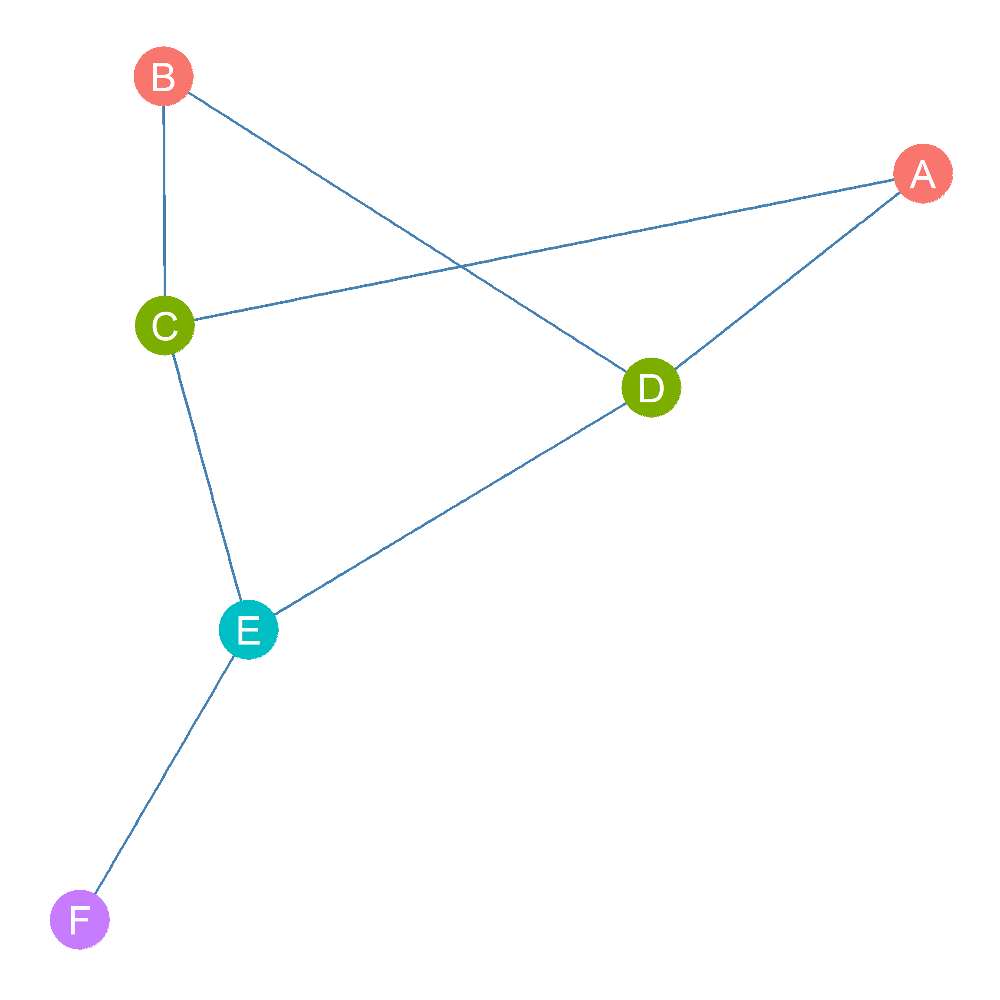
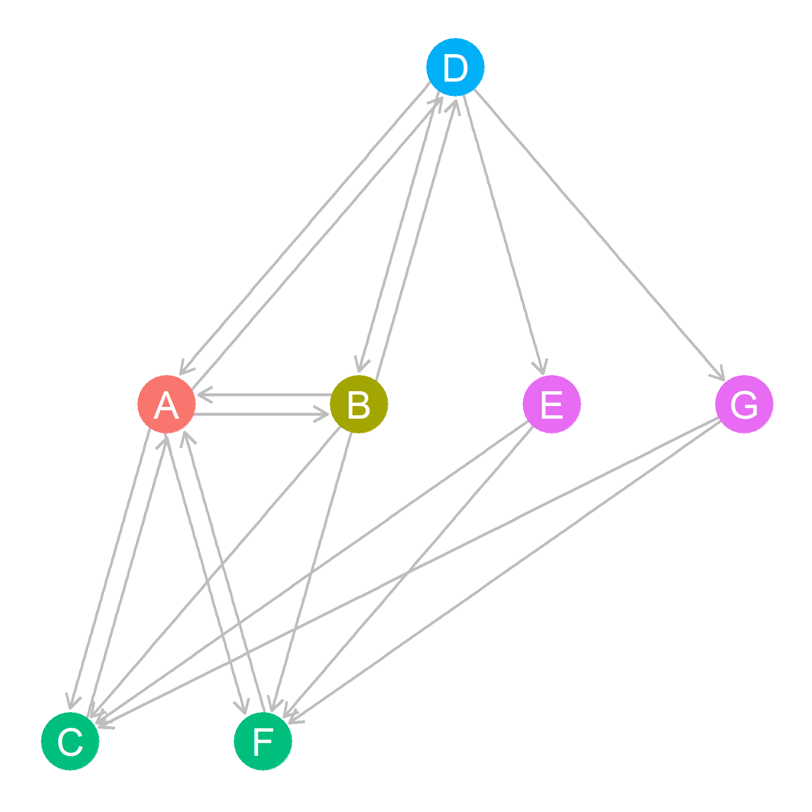
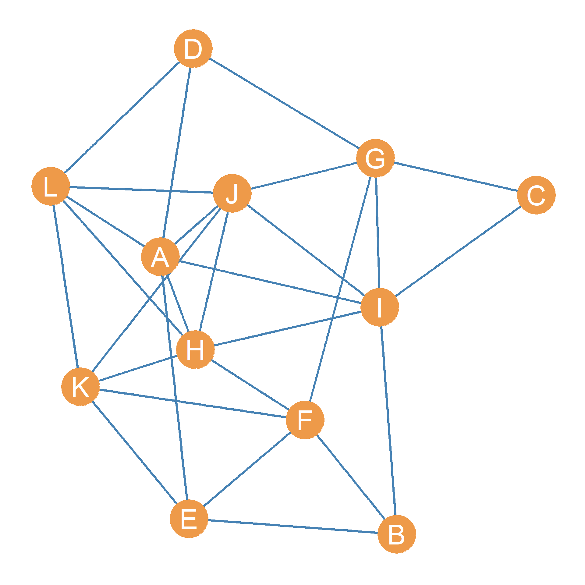

| A | B | C | D | E | F | G | |
|---|---|---|---|---|---|---|---|
| E | 0 | 0 | 1 | 0 | – | 1 | 0 |
| G | 0 | 0 | 1 | 0 | 0 | 1 | – |
18 Equivalence and Similarity
18.1 The Position Approach
The basic idea behind the position approach to dividing up the nodes in a graph is to come up with a measure of how similar two nodes are in terms of their patterns of connectivity with others. This measure then can be used to partition the nodes into what are called equivalence or similarity classes. Nodes in the same equivalence class are said to occupy the same position in the social structure described by the network.
There are two main ways to partition nodes into equivalence classes. The first is based on the idea that two nodes occupy the same position is they have similar patterns of connectivity to the same other nodes in the graph. This is called structural equivalence.
The second is based on the idea that two nodes are equivalent if they are connected to people who are themselves equivalent, even if these are not literally the same people. This is called regular equivalence.
This lesson will deal mainly with various ways of partitioning the nodes in a network based on structural equivalence (Section 18.2) and its more relaxed cousin, structural similarity.
18.2 Structural Equivalence
Two nodes are structurally equivalent if they are connected to the same others. Thus, their patterns of connectivity (e.g., their row in the adjacency matrix) is exactly the same.

For instance in Figure 18.1, nodes C and D are structurally equivalent because they are connected to the same neighbors \(\{A, B, E\}\). In the same way, nodes A and B are structurally equivalent because they are connected to the same neighbors \(\{C, D\}\). Finally, nodes E and F occupy unique positions in the network because their neighborhoods are not equivalent to that of any other nodes. Node E is the only node that has a neighborhood composed of nodes \(\{C, D, F\}\), and node F is the only node that has a neighborhood composed of node \(\{E\}\) only. Perhaps F is the main boss, and E is the second in command.
| A | B | C | D | E | F | |
|---|---|---|---|---|---|---|
| A | 0 | 0 | 1 | 1 | 0 | 0 |
| B | 0 | 0 | 1 | 1 | 0 | 0 |
| C | 1 | 1 | 0 | 0 | 1 | 0 |
| D | 1 | 1 | 0 | 0 | 1 | 0 |
| E | 0 | 0 | 1 | 1 | 0 | 1 |
| F | 0 | 0 | 0 | 0 | 1 | 0 |
Table 18.1: Adjancency Matrix of an Undirected Graph
We can also see by looking at Table 18.1) that, indeed, the rows corresponding to the structurally equivalent nodes \(\{A, B\}\) and \(\{C, D\}\) in the corresponding adjacency matrix are indistinguishable from one another. The nodes that have unique positions in the network \(\{E, F\}\), also have a unique pattern of 0s and 1s across the rows of the adjacency matrix.
18.2.1 Structural Similarity
In most real-world applications, the standard definition of structural equivalence is much too strong. In answer to the question of whether two nodes occupy the same position in the network it only allows for a “yes/no” answer. Yes, if their neighborhoods are exactly the same, and “no” if there aren’t.
What we need is a measure of position that allows for “more or less” rather than “yes” and “no.” This is what is called structural similarity (Leicht, Holme, and Newman 2006). Two nodes are structurally similar if they have similar patterns of connectivity with the same others. There are various versions of structural similarity between nodes. Here we will consider some popular ones.
18.3 Measuring Structural Similarity Using the Euclidian Distance
Given an adjacency matrix for a graph, how can we find out which nodes are structurally similar without staring at a picture for a long time? A classic way of measuring structural similarity, developed by the sociologist Ronald Burt Burt (1976) is to use the Euclidean Distance between the row vectors corresponding to each node in an adjacency matrix.
Take for instance Table 18.1. The row vector for node A is \(a_{(A)j} = (0, 0, 1, 1, 0, 0)\), and so is the row vector for node B \(a_{(B)j}\), because we already know they are structurally equivalent! Remember, the row vector is just the entries in each row corresponding to each node in Table 18.1. So the row vector for node C (\(a_{(C)j}= (1, 1, 0, 0, 1, 0)\) and so forth. Here the subscript \(j\) refers to each column entry of the adjacency matrix \((A, B, C...F)\).
The Euclidean Distance between the row row-vectors of two nodes \(k\) and \(l\) is given by:
\[ d^{Euclid}_{k,l} = \sqrt{\sum_j (a_{(k)j}-a_{(l)j})^2} \tag{18.1}\]
What equation Equation 18.1 says is that we take each corresponding entry of the row vectors, subtract them from one another, square them, sum them, and take the square root of the resulting sum. As noted, structurally equivalent nodes will receive a score of zero, while structurally similar nodes will receive scores that are close to zero. The larger the Euclidean distance between two nodes, the less structurally similar they are.
So let’s say we wanted to find out the structural similarity between between nodes A and C in Table 18.1 using the Euclidean distance. We would proceed as follows:
- First, get the row vector for node A that’s \(a_{(A)j} = (0, 0, 1, 1, 0, 0)\), as we saw earlier.
- Second, get the row vector for node C that’s \(a_{(C)j}= (1, 1, 0, 0, 1, 0)\), as we saw earlier.
- Third, line them up, so that you can compute the differences and then square them:
| A | 0 | 0 | 1 | 1 | 0 | 0 |
| C | 1 | 1 | 0 | 0 | 1 | 0 |
| A - C | (0 - 1) | (0 - 1) | (1 - 0) | (1 - 0) | (0 - 1) | (0 - 0) |
| A - C | -1 | -1 | 1 | 1 | -1 | 0 |
| (A - C)^2 | 1 | 1 | 1 | 1 | 1 | 0 |
Table 18.2: Euclidean distance calculation.
The Euclidean distance between A and C is thus the square root of the sum of the numbers in the last row of Table 18.2: \(\sqrt{1+1+1+1+1+0} = \sqrt{5}= 2.2\).
As we noted, for structurally equivalent node pairs (which have identical row vectors), the Euclidean distance should reach its minimum value of zero. We can check that by computing the Euclidean distance of nodes A and B in Table 18.1:
| A | 0 | 0 | 1 | 1 | 0 | 0 |
| B | 0 | 0 | 1 | 1 | 0 | 0 |
| A-C | 0 | 0 | 0 | 0 | 0 | 0 |
| (A-C)^2 | 0 | 0 | 0 | 0 | 0 | 0 |
Table 18.3: Euclidean distance calculation.
Indeed since the sum of the last row of the numbers in Table 18.3 is zero, then so will the square root!
18.3.1 The Structural Similarity Matrix
Table 18.4 shows the structural similarity matrix (\(\mathbf{S}\)) produced by computing euclidean distance between of each pair of nodes in the adjacency matrix shown in Table 18.1 (corresponding to the graph shown in Figure 18.1) according to Equation 18.1.
| A | B | C | D | E | F | |
|---|---|---|---|---|---|---|
| A | – | 0 | 2.2 | 2.2 | 1 | 1.7 |
| B | 0 | – | 2.2 | 2.2 | 1 | 1.7 |
| C | 2.2 | 2.2 | – | 0 | 2.4 | 1.4 |
| D | 2.2 | 2.2 | 0 | – | 2.4 | 1.4 |
| E | 1 | 1 | 2.4 | 2.4 | – | 2 |
| F | 1.7 | 1.7 | 1.4 | 1.4 | 2 | – |
Table 18.4: Structural Equivalence matrix for an undirected graph.
In the \(\mathbf{S}\) matrix, each cell \(\mathbf{s}_{ij}\) gives us the Euclidean distance between nodes i and j. Note that the \(\mathbf{S}\) matrix is symmetric, meaning that the same information is contained in the lower and upper triangles (\(\mathbf{s}_{ij}= \mathbf{s}_{ji}\)). This makes sense, because the distance between point a and point b should be the same as the distance between point b and point a. In the same way, if you are similar to your friend, then your friend should be equally similar to you!
Checking the values in Table 18.4, we can see that structurally equivalent pairs of nodes—are connected to exactly the same others, like nodes A and B or nodes C and D—have similarity \(\mathbf{d}_{ji}= 0\) in the matrix based on the Euclidian distnce. As nodes become less similar—are connected to different others like nodes E and C—their Euclidean distance becomes larger.
So, we can say that structurally similar nodes occupy the same position in the network. So A and B occupy the same position, and so do C and D.
18.3.2 Euclidian Distance in Directed Graphs
So far we have considered the case of structural similarity for undirected graphs composed of symmetric ties.
But what happens when the network we are studying is composed of asymmetric ties?
Well, in the directed graph case, we have to distinguish between two ways nodes in a graph can be structurally similar to one another based on the directionality of the ties we are considering.
- In the first case, two nodes are structurally similar if they send ties to the same others.
- In the second case, two nodes are structurally similar if they receive ties from the same others.
These don’t necessarily have to go together. One node (A) can send ties to the same others as another node (B) (and thus A and B can be structurally similar when it comes to their out-neighbors), but receive ties from a different set of others (and thus A and B can fail to be structurally similar in terms of their in-neighbors)
This means that in the directed graph case, two nodes are structurally equivalent if and only if they send ties to the same others and receive ties from the same others.
This added complication means that we have to modify the way we measure structural similarity in the directed graph case when using the euclidian distance. Particularly, to consider the distance between pairs of nodes, we now have to consider both their row-vectors (capturing the pattern of sending ties) and their column vectors (capturing the patterns of their receiving ties) in calculating the distance.
This means Equation 18.1 now turns into:
\[ d^{Euclidean}_{k,l} = \sqrt{\sum_j (a_{(k)j}-a_{(l)j})^2 + \sum_i (a_{(k)i}-a_{(l)i})^2} \tag{18.2}\]
The first part of Equation 18.2 inside the square root operator is just like Equation 18.1: \(\sum_j (a_{(k)j}-a_{(l)j})^2\). In this case, this tracks the Euclidean distance between the respective row vectors of nodes k and l (which is we sum across the columns j), which captures the extent to which they send links to the same others. When this part of the equation equals zero, it means k and l are structurally equivalent when it comes to sending ties.
The second part that is added is \(\sum_j (a_{(k)i}-a_{(l)i})^2\), which measures the Euclidean distance between the column vectors of nodes k and l in the asymmetric adjacency matrix (which is why we sum across the rows i); this captures the extent to which k and l receive ties from the same others. When this part of the equation equals zero, it means k and l are structurally equivalent when it comes to receiving ties.

Let’s look at an example. Consider the graph shown in Figure 18.2. In the graph, nodes rendered in the same color are structurally equivalent according to Equation 18.2. The corresponding asymmetric adjacency matrix for the graph in Figure 18.2 is shown in Table 18.5.
| A | B | C | D | E | F | G | |
|---|---|---|---|---|---|---|---|
| A | – | 1 | 1 | 1 | 0 | 1 | 0 |
| B | 1 | – | 1 | 1 | 0 | 1 | 0 |
| C | 1 | 0 | – | 0 | 0 | 0 | 0 |
| D | 1 | 1 | 0 | – | 1 | 0 | 1 |
| E | 0 | 0 | 1 | 0 | – | 1 | 0 |
| F | 1 | 0 | 0 | 0 | 0 | – | 0 |
| G | 0 | 0 | 1 | 0 | 0 | 1 | – |
Table 18.5: Asymmetric adjacency matrix for a directed graph.
Let’s say we wanted to figure out whether nodes E and G are structurally equivalent (they are). First, we would compare their respective row-vectors in the adjacency matrix:
Then we would compare their respective column vectors:
| E | G | |
|---|---|---|
| A | 0 | 0 |
| B | 0 | 0 |
| C | 0 | 0 |
| D | 1 | 1 |
| E | – | 0 |
| F | 0 | 0 |
| G | 0 | – |
And indeed, they are both the same! When we compute the structural similarity matrix based on the Euclidean distance for the directed graph shown in fig-direquiv using Equation 18.2, we end up with:
| A | B | C | D | E | F | G | |
|---|---|---|---|---|---|---|---|
| A | – | 3.4 | 4.6 | 4.4 | 3.1 | 4.6 | 3.1 |
| B | 3.4 | – | 3.7 | 3.8 | 2.4 | 3.7 | 2.4 |
| C | 4.6 | 3.7 | – | 3.1 | 3.9 | 0 | 3.9 |
| D | 4.4 | 3.8 | 3.1 | – | 4.1 | 3.1 | 4.1 |
| E | 3.1 | 2.4 | 3.9 | 4.1 | – | 3.9 | 0 |
| F | 4.6 | 3.7 | 0 | 3.1 | 3.9 | – | 3.9 |
| G | 3.1 | 2.4 | 3.9 | 4.1 | 0 | 3.9 | – |
Table 18.8: Structural Equivalence matrix for an undirected graph.
Which tells us that nodes E and G in Figure 18.2 are structurally equivalent \(d_{E,G} = 0\), but so are nodes C and F. These two pair of nodes send ties to the same out-neighbors and receive ties from the same in-neighbors.1 So, we can say that nodes E and G occupy one position in the network and nodes C and F occupy another position. Perhaps if this were an office, and the relation was one of advice, this would reveal two set of actors who have a similar role in the office network.
18.4 Measuring Structural Similarity Using the Neighborhood Overlap
As we noted in the original graph theory lesson, it is possible for the neighborhood of two nodes in a graph to overlap. Recall that for each node, we define its neighborhood as the set of other nodes that they are adjacent to. That means the neighborhood between two nodes can have members in common. The more members they have in common the more structurally similar two nodes are.

For instance, imagine you have a friend and that friend knows all your friends and you know all their friends. In which case we would say that the overlap between your node neighborhoods is pretty high; in fact the two neighborhoods overlap completely, which makes you structurally equivalent! But even if your friend knows 90% of the people in your network (and you know 90% of the people in their network) that would make you very structurally similar to one another.
Now imagine you just met a new person online who lives in a far away country, and as far as you know, they know none of your friends and you know none of their friends. In which case, we would say that the overlap if the two neighborhoods is nil or as close to zero as it can get. You occupy completely different positions in the network.
18.4.1 Jaccard Similarity
We can use this reasoning to construct a measure of structural similarity between two nodes called Jaccard’s Similarity Coefficient (\(J_{ij}\)). It goes like this (Jaccard 1901). Let’s say \(n_{ij}\) is the number of friends that nodes i and j have in common, and the total number of i’s friends if \(k_i\) (i’s degree) and the total number of j’s friends if \(k_j\). Then the structural similarity of i and j is given by:
\[ J_{ij} = \frac{n_{ij}}{k_i + k_j - n_{ij}} \tag{18.3}\]
It says that the structural similarity of two nodes is equivalent to the number of friends that the two persons know in common, divided by the sum of their degrees minus the number of people they know in common. Jaccard’s coefficient ranges from zer (when \(n_{ij}=0\) and the two nodes have no neighbors in common) to 1.0 (when \(n_{ij} = k_i\) and \(n_{ij} = k_j\) and the two nodes are structurally equivalent).
18.4.2 Dice Similarity
A second measure of structural similarity between nodes based on the neighborhood overlap is the Dice Similarity Index. It goes like this (Dice 1945):
\[ D_{ij} = \frac{2n_{ij}}{k_i + k_j} \tag{18.4}\]
Which says that the structural similarity between two nodes is equivalent to the twice the number of people the know in common, divided by the sum of their degrees.
18.4.3 Cosine Similarity
A third and final measure of structural similarity between two nodes based on the neighborhood overlap is the cosine similarity between their respective neighborhoods (\(C_{ij}\)). This is given by:
\[ C_{ij} = \frac{n_{ij}}{\sqrt{k_ik_j}} \tag{18.5}\]
Which says that the structural similarity between two nodes is equivalent to the number of people they know in common divided by the square root of the product of their degrees (which is also referred to as the geometric mean of their degrees).
A lot of the times, these three measures of structural similarity will tend to agree. Table 18.9), Table 18.10), and Table 18.11) show the similarities between each pair of nodes in the graph depicted in Figure 18.3.
| A | B | C | D | E | F | G | H | I | J | K | L | |
|---|---|---|---|---|---|---|---|---|---|---|---|---|
| A | – | 0.29 | 0.14 | 0.12 | 0 | 0.22 | 0.38 | 0.33 | 0.2 | 0.33 | 0.57 | 0.38 |
| B | – | – | 0.25 | 0 | 0.17 | 0.14 | 0.33 | 0.29 | 0 | 0.12 | 0.33 | 0 |
| C | – | – | – | 0.25 | 0 | 0.17 | 0.17 | 0.14 | 0.14 | 0.33 | 0 | 0 |
| D | – | – | – | – | 0.17 | 0.14 | 0 | 0.29 | 0.29 | 0.5 | 0.14 | 0.14 |
| E | – | – | – | – | – | 0.29 | 0.12 | 0.43 | 0.25 | 0.25 | 0.12 | 0.29 |
| F | – | – | – | – | – | – | 0 | 0.1 | 0.38 | 0.38 | 0.25 | 0.25 |
| G | – | – | – | – | – | – | – | 0.38 | 0.22 | 0.1 | 0.25 | 0.25 |
| H | – | – | – | – | – | – | – | – | 0.2 | 0.5 | 0.38 | 0.38 |
| I | – | – | – | – | – | – | – | – | – | 0.33 | 0.22 | 0.38 |
| J | – | – | – | – | – | – | – | – | – | – | 0.22 | 0.38 |
| K | – | – | – | – | – | – | – | – | – | – | – | 0.25 |
| L | – | – | – | – | – | – | – | – | – | – | – | – |
Table 18.9: Structural similarity matrix based on Jaccard’s index.
| A | B | C | D | E | F | G | H | I | J | K | L | |
|---|---|---|---|---|---|---|---|---|---|---|---|---|
| A | – | 0.44 | 0.25 | 0.22 | 0 | 0.36 | 0.55 | 0.5 | 0.33 | 0.5 | 0.73 | 0.55 |
| B | – | – | 0.4 | 0 | 0.29 | 0.25 | 0.5 | 0.44 | 0 | 0.22 | 0.5 | 0 |
| C | – | – | – | 0.4 | 0 | 0.29 | 0.29 | 0.25 | 0.25 | 0.5 | 0 | 0 |
| D | – | – | – | – | 0.29 | 0.25 | 0 | 0.44 | 0.44 | 0.67 | 0.25 | 0.25 |
| E | – | – | – | – | – | 0.44 | 0.22 | 0.6 | 0.4 | 0.4 | 0.22 | 0.44 |
| F | – | – | – | – | – | – | 0 | 0.18 | 0.55 | 0.55 | 0.4 | 0.4 |
| G | – | – | – | – | – | – | – | 0.55 | 0.36 | 0.18 | 0.4 | 0.4 |
| H | – | – | – | – | – | – | – | – | 0.33 | 0.67 | 0.55 | 0.55 |
| I | – | – | – | – | – | – | – | – | – | 0.5 | 0.36 | 0.55 |
| J | – | – | – | – | – | – | – | – | – | – | 0.36 | 0.55 |
| K | – | – | – | – | – | – | – | – | – | – | – | 0.4 |
| L | – | – | – | – | – | – | – | – | – | – | – | – |
Table 18.10: Structural similarity matrix based on Dice’s index.
| A | B | C | D | E | F | G | H | I | J | K | L | |
|---|---|---|---|---|---|---|---|---|---|---|---|---|
| A | – | 0.47 | 0.29 | 0.24 | 0 | 0.37 | 0.55 | 0.5 | 0.33 | 0.5 | 0.73 | 0.55 |
| B | – | – | 0.41 | 0 | 0.29 | 0.26 | 0.52 | 0.47 | 0 | 0.24 | 0.52 | 0 |
| C | – | – | – | 0.41 | 0 | 0.32 | 0.32 | 0.29 | 0.29 | 0.58 | 0 | 0 |
| D | – | – | – | – | 0.29 | 0.26 | 0 | 0.47 | 0.47 | 0.71 | 0.26 | 0.26 |
| E | – | – | – | – | – | 0.45 | 0.22 | 0.61 | 0.41 | 0.41 | 0.22 | 0.45 |
| F | – | – | – | – | – | – | 0 | 0.18 | 0.55 | 0.55 | 0.4 | 0.4 |
| G | – | – | – | – | – | – | – | 0.55 | 0.37 | 0.18 | 0.4 | 0.4 |
| H | – | – | – | – | – | – | – | – | 0.33 | 0.67 | 0.55 | 0.55 |
| I | – | – | – | – | – | – | – | – | – | 0.5 | 0.37 | 0.55 |
| J | – | – | – | – | – | – | – | – | – | – | 0.37 | 0.55 |
| K | – | – | – | – | – | – | – | – | – | – | – | 0.4 |
| L | – | – | – | – | – | – | – | – | – | – | – | – |
Table 18.11: Structural similarity matrix based on the cosine distance.
18.4.4 Neighborhood Overlap in Directed Graphs
Similarity works in similar (pun intended) ways when studying asymmetric ties in directed graph. The main difference, as usual, is that in a directed graph pairs of nodes can structurally similar in two different ways. Fist, pairs of nodes can be similar with respect to their out-neighborhoods, in which case we say that nodes are structural similar if they point to the same set of neighbors. This is called the out-similarity. Second, pairs of nodes can be similar with respect to their in-neighborhoods, in which case we say that nodes are structural similar if they receive ties or nominations from the same set of neighbors. This is called the in-similarity.
Special cases of the out and in-similarities between nodes show up in particular types of networks. For instance, consider an information network composed of scientific papers. Here a directed tie emerges when paper A cites or refers to paper B. This is called a citation network.
In a citation network out-similar papers are papers that cite the same other papers. Out-similar papers are said to exhibit bibliographic coupling (essentially the overlap or set intersection between their reference lists). A weighted network of similarities between papers, where the weight of the edge is the number of other papers that that they both cite in common is called a bibliographic coupling network. A bibliographic coupling network is essentially a network of out-similarities between papers in a scientific information network.
In a citation network, in-similar papers are papers that get cited by the same set of others. In this case, we say that the two papers are co-cited a third paper. A weighted network of similarities between papers, where the weight of the edis the number of other papers that cite both of them is called co-citation network. A co-citation network is essentially a network of in-similarities between papers in a scientific information network.
The two measures of out and in-similarities can be defined in the same way as before. If \(n^{out}_{ij}\) is the number of common out-neighbors of nodes i and j and \(n^{in}_{ij}\) is the number of their common out-neighbors, \(k_{out}\) is the total number of out-neighbors of a particular node, and \(k_{in}\) is the total number of in-neighbors, then the structural out and in-similarities between pairs of nodes i and j are given by (using the cosine distance measure) by:
\[ C_{ij}^{out} = \frac{n_{ij}^{out}}{\sqrt{k_i^{out}k_j^{out}}} \tag{18.6}\]
\[ C_{ij}^{in} = \frac{n_{ij}^{in}}{\sqrt{k_i^{in}k_j^{in}}} \tag{18.7}\]
References
Burt, Ronald S. 1976. “Positions in Networks.” Social Forces 55 (1): 93–122.
Dice, Lee R. 1945. “Measures of the Amount of Ecologic Association Between Species.” Ecology 26 (3): 297–302.
Jaccard, Paul. 1901. “Distribution of the Alpine Flora in the Dranse’s Basin and Some Neighbouring Regions.” Bulletin de La Societe Vaudoise Des Sciences Naturelles 37 (1): 241–72.
Leicht, Elizabeth A, Petter Holme, and Mark EJ Newman. 2006. “Vertex Similarity in Networks.” Physical Review E 73 (2): 026120.
Can you figure out who those are in the figure?↩︎